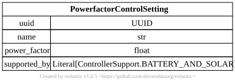

Inverter Controller#
{kind=link}
- pydantic model gdm.distribution.controllers.InverterController#
Inverter contoller represent the complete control settings for a given InverterEquipment. This model may be used with an instance of DistributionSolar, DistributionBattery or any other model that has an inverter.
- field active_power_control: Annotated[ActivePowerInverterControllerBase | None, FieldInfo(annotation=NoneType, required=False, default=None, description='Controller settings to control active power output of the inverter')] = None#
Controller settings to control active power output of the inverter
- field name: Annotated[str, FieldInfo(annotation=NoneType, required=False, default='', description='Name of the inverter controller.')] = ''#
Name of the inverter controller.
- field night_mode: Annotated[bool, FieldInfo(annotation=NoneType, required=True, description='If True, the controller controls reactive power even when there is no active power.')] [Required]#
If True, the controller controls reactive power even when there is no active power.
- field prioritize_active_power: Annotated[bool, FieldInfo(annotation=NoneType, required=True, description='If True, the controller tries to prioritize active power.')] [Required]#
If True, the controller tries to prioritize active power.
- field reactive_power_control: Annotated[ReactivePowerInverterControllerBase | None, FieldInfo(annotation=NoneType, required=False, default=None, description='Controller settings to control reactive power output of the inverter')] = None#
Controller settings to control reactive power output of the inverter
- field uuid: UUID [Optional]#
Reactive Power Controls#
[

](../../models/PowerfactorControlSetting.svg- pydantic model gdm.distribution.controllers.PowerfactorControlSetting#
Control settings for the Inverter Controller to represent power factor control. Works with both battery and solar systems. Controls reactive power output of the connected inverter
- field name: Annotated[str, Field('', description='Name of the inverter controller.')] = ''#
Name of the inverter controller.
- field power_factor: Annotated[float, FieldInfo(annotation=NoneType, required=True, description='The power factor used for the controller.', metadata=[Ge(ge=-1), Le(le=1)])] [Required]#
The power factor used for the controller.
- field supported_by: Literal[ControllerSupport.BATTERY_AND_SOLAR] = ControllerSupport.BATTERY_AND_SOLAR#
- field uuid: UUID [Optional]#
{kind=link}
- pydantic model gdm.distribution.controllers.VoltVarControlSetting#
Control settings for the Inverter Controller to represent volt / var control settings. Works with both battery and solar systems. Controls reactive power output of the connected inverter
- field name: Annotated[str, Field('', description='Name of the inverter controller.')] = ''#
Name of the inverter controller.
- field supported_by: Literal[ControllerSupport.BATTERY_AND_SOLAR] = ControllerSupport.BATTERY_AND_SOLAR#
- field uuid: UUID [Optional]#
- field var_follow: Annotated[bool, FieldInfo(annotation=NoneType, required=True, description='Set to false if you want inverter reactive power\n generation absorption to respect inverter status')] [Required]#
Set to false if you want inverter reactive power generation absorption to respect inverter status
- field volt_var_curve: Annotated[Curve, FieldInfo(annotation=NoneType, required=True, description='The volt-var curve that is being applied.')] [Required]#
The volt-var curve that is being applied.
Active Power Controls#
{kind=link}
- pydantic model gdm.distribution.controllers.VoltWattControlSetting#
Control settings for the Inverter Controller to represent volt / watt control settings. Works with both battery and solar systems. Controls active power output of the connected inverter
- field name: Annotated[str, Field('', description='Name of the inverter controller.')] = ''#
Name of the inverter controller.
- field supported_by: Literal[ControllerSupport.BATTERY_AND_SOLAR] = ControllerSupport.BATTERY_AND_SOLAR#
- field uuid: UUID [Optional]#
- field volt_watt_curve: Annotated[Curve, FieldInfo(annotation=NoneType, required=True, description='The volt-watt curve that is being applied.')] [Required]#
The volt-watt curve that is being applied.
{kind=link}
- pydantic model gdm.distribution.controllers.PeakShavingBaseLoadingControlSetting#
Control settings for the Inverter Controller to represent peak shaving / base loading control settings. Works with battery systems only. Controls active power output of the connected inverter. If the loading on the controlled element exceeds peak_shaving_target, the battery discharges to shave off peak load. If the loading drops below the base_loading_target, the battery charges to maintain minimum loading.
- field base_loading_target: Annotated[ActivePower, FieldInfo(annotation=NoneType, required=True, description='The base loading target.')] [Required]#
The base loading target.
- field name: Annotated[str, Field('', description='Name of the inverter controller.')] = ''#
Name of the inverter controller.
- field peak_shaving_target: Annotated[ActivePower, FieldInfo(annotation=NoneType, required=True, description='The peak shaving target.')] [Required]#
The peak shaving target.
- field supported_by: Literal[ControllerSupport.BATTERY_ONLY] = ControllerSupport.BATTERY_ONLY#
- field uuid: UUID [Optional]#
{kind=link}
- pydantic model gdm.distribution.controllers.CapacityFirmingControlSetting#
Control settings for the Inverter Controller to represent capacity firming control settings. Works with battery systems only. Controls active power output of the connected inverter
- field max_active_power_roc: Annotated[ActivePowerOverTime, FieldInfo(annotation=NoneType, required=True, description='Maximum allowable rate of charge for active power on the controlled bus.')] [Required]#
Maximum allowable rate of charge for active power on the controlled bus.
- field min_active_power_roc: Annotated[ActivePowerOverTime, FieldInfo(annotation=NoneType, required=True, description='Minimum allowable rate of charge for active power on the controlled bus.')] [Required]#
Minimum allowable rate of charge for active power on the controlled bus.
- field name: Annotated[str, Field('', description='Name of the inverter controller.')] = ''#
Name of the inverter controller.
- field supported_by: Literal[ControllerSupport.BATTERY_ONLY] = ControllerSupport.BATTERY_ONLY#
- field uuid: UUID [Optional]#
{kind=link}
- pydantic model gdm.distribution.controllers.TimeBasedControlSetting#
Control settings for the Inverter Controller to represent time based charge / discharge control settings. Works with battery systems only. Controls active power output of the connected inverter
- field charging_end_time: Annotated[time, FieldInfo(annotation=NoneType, required=True, description='The time at which the battery stops charging.')] [Required]#
The time at which the battery stops charging.
- field charging_power: Annotated[ActivePower, FieldInfo(annotation=NoneType, required=True, description='The power to charge the battery.')] [Required]#
The power to charge the battery.
- field charging_start_time: Annotated[time, FieldInfo(annotation=NoneType, required=True, description='The time at which the battery starts charging.')] [Required]#
The time at which the battery starts charging.
- field discharging_end_time: Annotated[time, FieldInfo(annotation=NoneType, required=True, description='The time at which the battery stops discharging.')] [Required]#
The time at which the battery stops discharging.
- field discharging_power: Annotated[ActivePower, FieldInfo(annotation=NoneType, required=True, description='The power to discharge the battery.')] [Required]#
The power to discharge the battery.
- field discharging_start_time: Annotated[time, FieldInfo(annotation=NoneType, required=True, description='The time at which the battery starts discharging.')] [Required]#
The time at which the battery starts discharging.
- field name: Annotated[str, Field('', description='Name of the inverter controller.')] = ''#
Name of the inverter controller.
- field supported_by: Literal[ControllerSupport.BATTERY_ONLY] = ControllerSupport.BATTERY_ONLY#
- field uuid: UUID [Optional]#
{kind=link}
- pydantic model gdm.distribution.controllers.SelfConsumptionControlSetting#
Control settings for the Inverter Controller to represent self comsumption control settings. Works with battery systems only. Controls active power output of the connected inverter
- field name: Annotated[str, Field('', description='Name of the inverter controller.')] = ''#
Name of the inverter controller.
- field supported_by: Literal[ControllerSupport.BATTERY_ONLY] = ControllerSupport.BATTERY_ONLY#
- field uuid: UUID [Optional]#
{kind=link}
- pydantic model gdm.distribution.controllers.TimeOfUseControlSetting#
Control settings for the Inverter Controller to represent time of use control settings. Works with battery systems only. Controls active power output of the connected inverter
- field charging_power: Annotated[ActivePower, FieldInfo(annotation=NoneType, required=True, description='The power to charge the battery after TOU window.')] [Required]#
The power to charge the battery after TOU window.
- field name: Annotated[str, Field('', description='Name of the inverter controller.')] = ''#
Name of the inverter controller.
- field supported_by: Literal[ControllerSupport.BATTERY_ONLY] = ControllerSupport.BATTERY_ONLY#
- field tarriff: ... [Required]#
- field uuid: UUID [Optional]#
{kind=link}
- pydantic model gdm.distribution.controllers.DemandChargeControlSetting#
Control settings for the Inverter Controller to represent demand charge focused control settings. Works with battery systems only. Controls active power output of the connected inverter
- field charging_power: Annotated[ActivePower, FieldInfo(annotation=NoneType, required=True, description='The power to charge the battery after demand change window.')] [Required]#
The power to charge the battery after demand change window.
- field name: Annotated[str, Field('', description='Name of the inverter controller.')] = ''#
Name of the inverter controller.
- field supported_by: Literal[ControllerSupport.BATTERY_ONLY] = ControllerSupport.BATTERY_ONLY#
- field tarriff: ... [Required]#
- field uuid: UUID [Optional]#